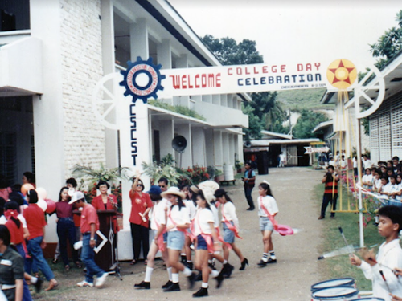
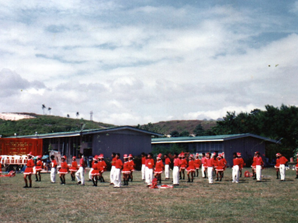
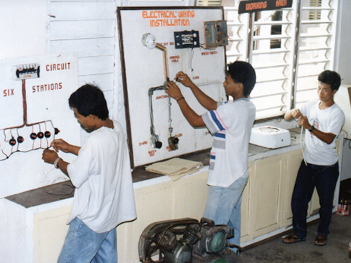
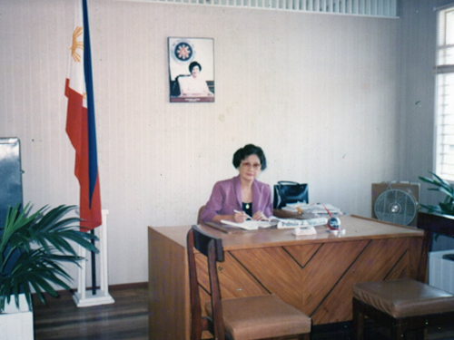

ARTICLE 1
Cebu Technological University (CTU) Danao started in June 1949 by virtue of the Danao Municipal Council Resolution naming it “Danao Provincial High School”. It was converted into a national vocational secondary school on June 22, 1957, pursuant to Republic Act (R.A.) No. 1907. Its name was changed to Danao National Vocational School, supervised by then Cebu School of Arts and Trades in Cebu City in 1958.
ARTICLE 2
The school secured an eight-hectare site in Brgy. Sabang in 1963. In 1964, it acquired two buildings equipped with shop machines donated by the Colombo Aid from the Government of New Zealand. In July 1965, the school transferred to its present site in Sabang, Danao City. Ten years later, it was changed to Danao Vocational School which then offered the two-year trade technical curriculum. It became an extension campus of the Cebu State College of Science and Technology (CSCST) by virtue of Batas Pambansa 412 in 1983. A year after, it started to operate as an independent chartered college with a new name CSCST-College of Industrial Technology. The CSCST-CIT was administered by a Vocational School Superintendent, following the construction of the administration building and two-story building in 1988.
ARTICLE 3
In 1990, the secondary curriculum was phased out to focus on the higher education programs and produced its first baccalaureate degree graduates. With the effort of Dr. Bonifacio Villanueva and the support of some legislators, President Arroyo signed the bill converting the Cebu State College of Science and Technology System and its external campuses into Cebu Technological University in 2009
ARTICLE 4
Today, CTU Danao is one of the best campuses of the University, offering 19 undergraduate and nine (9) graduate programs to over 4,156 students. Most of these programs have received Level II and Level III accreditations from the Accrediting Agency of Chartered Colleges and Universities in the Philippines (AACCUP) organization.